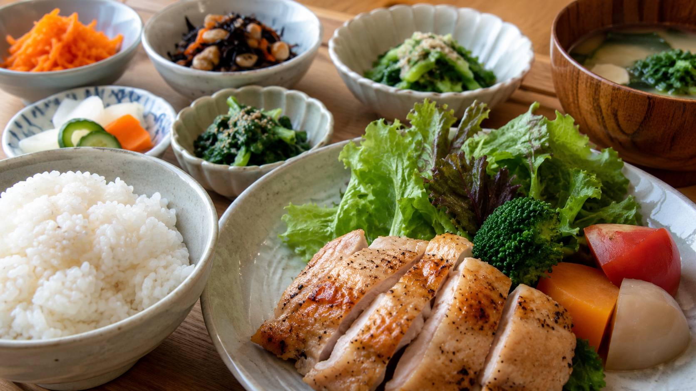
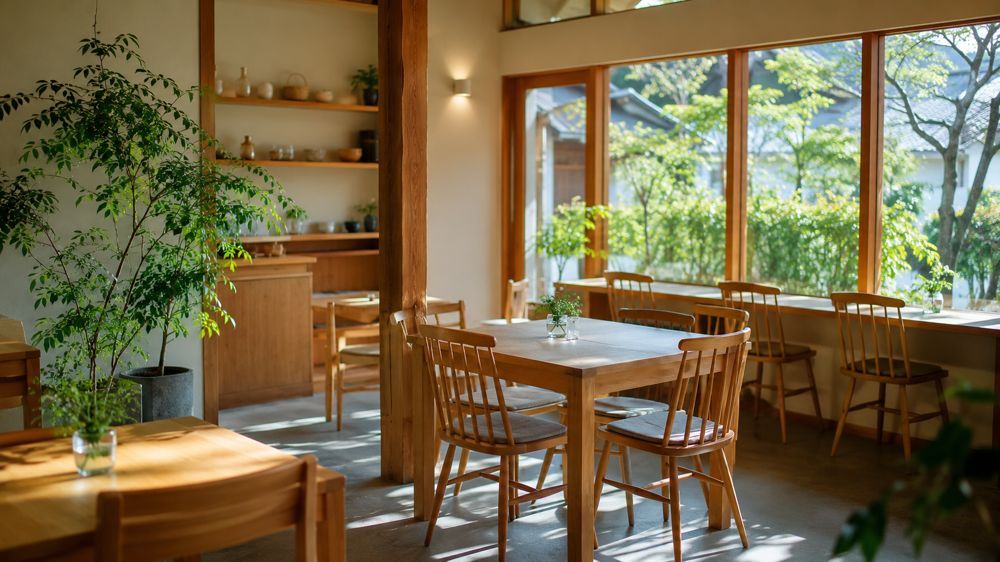

PR ｜ サンプル記事
ヘルシーカフェ
カフェ・栄養
名古屋市昭和区
「頑張る体は、毎日のごはんから。」
スポーツキッズの食を支えるカフェ。
どれだけ練習しても、体をつくるのは毎日の食事。名古屋市昭和区の「ヘルシーカフェ」は、管理栄養士監修のメニューで、スポーツを頑張る子どもとその家族を食の面から応援するお店です。今回はそのこだわりを取材しました。
成長期の子どもに必要な栄養は、大人とは違います。ヘルシーカフェのメニューは、たんぱく質・炭水化物・ビタミンのバランスを考えて設計。練習で消耗した体をしっかり回復させ、次の練習に向けてエネルギーをためられる内容です。「おいしくて、体にいい」を両立しているから、子どもも自然と完食できます。

「試合の朝は何を食べさせればいい？」「練習の合間の補食は？」——そんな保護者の疑問にも、具体的なアドバイスがもらえます。タイミングや量、コンビニでも買える手軽なものまで、家庭で実践できる形で教えてくれるのがうれしいところ。食の知識が、子どものパフォーマンスを支えます。
Q. スポーツキッズの食事で大切なことは？
「足りない」を防ぐこと。とくに成長期は、エネルギーとたんぱく質が不足しがちです。難しく考えず、まずは3食をしっかり、が基本です。
Q. 保護者へ伝えたいことは？
がんばりすぎなくて大丈夫。お子さんが笑顔でごはんを食べられることが、いちばんの栄養です。
明るく落ち着いた店内は、練習帰りの親子でも入りやすい雰囲気。子ども連れに配慮した座席や、ボリュームを選べるメニューもうれしいポイントです。「食べることが好きになる」きっかけを、おいしい一皿から。地域の家族にやさしいカフェです。

「試合前の食事を相談したら、家でもできる献立を教えてもらえました。子どもも『ここのごはんが好き』と言って通っています。」